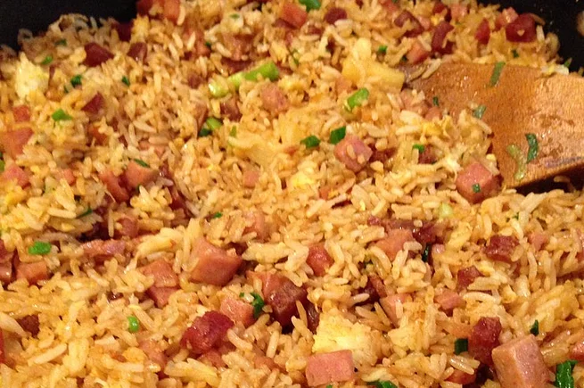

Delicioso Fried Rice

Fried rice Island style
Fried rice like your mother from an island used to make it, with delicious fresh ingredients and done in a hot minute or 15.
Ingredients
- 1 ½ cups uncooked jasmine rice
- 3 cups water
- 2 teaspoons canola oil
- 1 (12 ounce) can fully cooked luncheon meat
- (such as SPAM®), cubed
- ½ cup sliced Chinese sweet pork sausage (lup cheong)
- 3 eggs, beaten
- 2 tablespoons canola oil
- 1 (8 ounce) can pineapple chunks, drained
- ½ cup chopped green onion
- 3 tablespoons oyster sauce
- ½ teaspoon garlic powder
Directions
- Bring the rice and water to a boil in a saucepan over high heat. Reduce heat to medium-low, cover, and simmer until the rice is tender, and the liquid has been absorbed, 20 to 25 minutes. Let the rice cool completely.
- Heat 2 teaspoons of oil in a skillet over medium heat, and brown the luncheon meat and sausage. Set aside, and pour the beaten eggs into the hot skillet. Scramble the eggs, and set aside.
- Heat 2 tablespoons of oil in a large nonstick skillet over medium heat, and stir in the rice. Toss the rice with the hot oil until heated through and beginning to brown, about 2 minutes. Add the garlic powder, toss the rice for 1 more minute to develop the garlic taste, and stir in the luncheon meat, sausage, scrambled eggs, pineapple, and oyster sauce. Cook and stir until the oyster sauce coats the rice and other ingredients, 2 to 3 minutes, stir in the green onions, and serve.